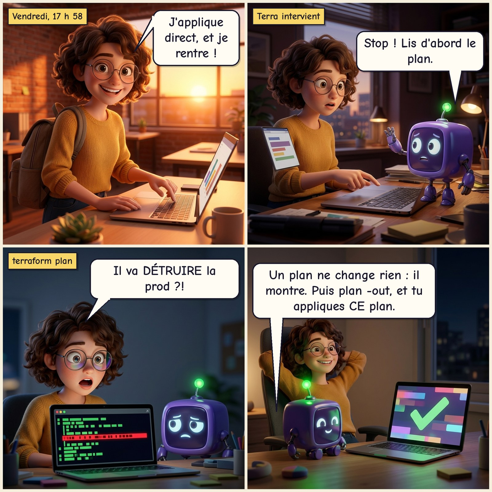
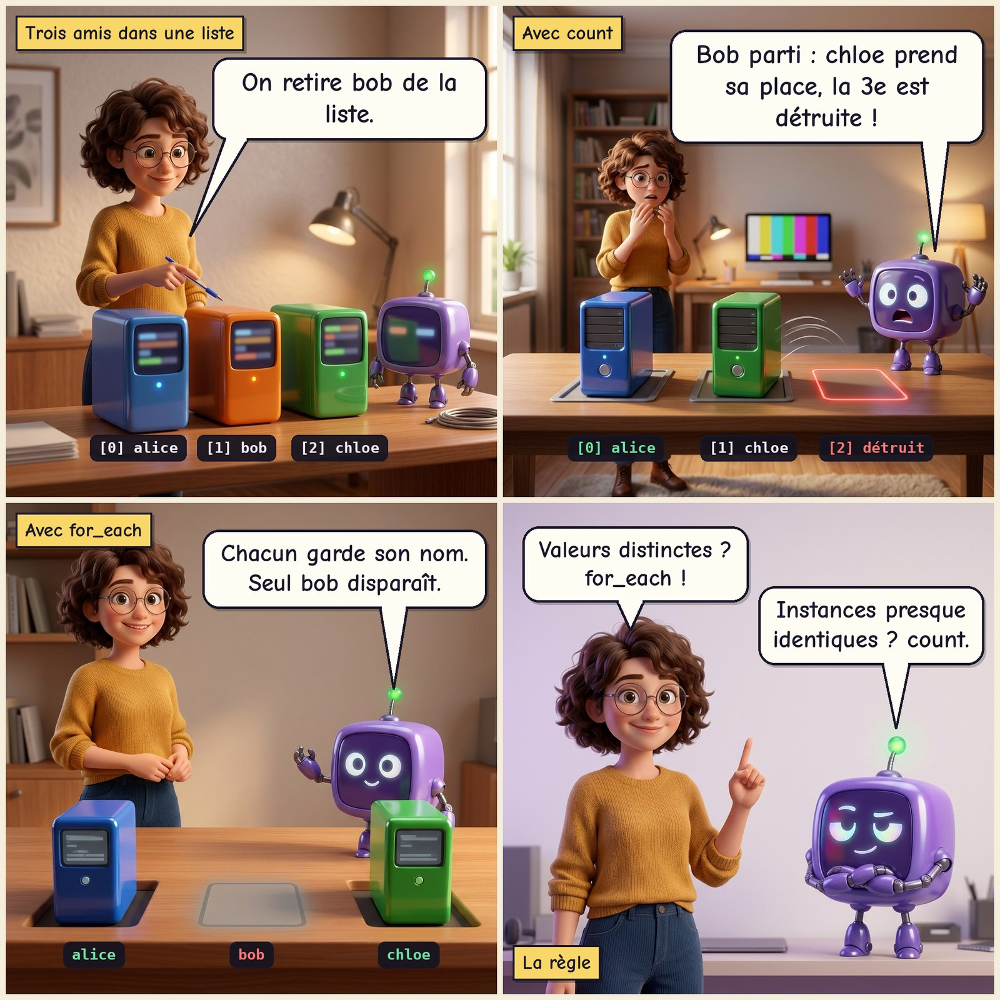
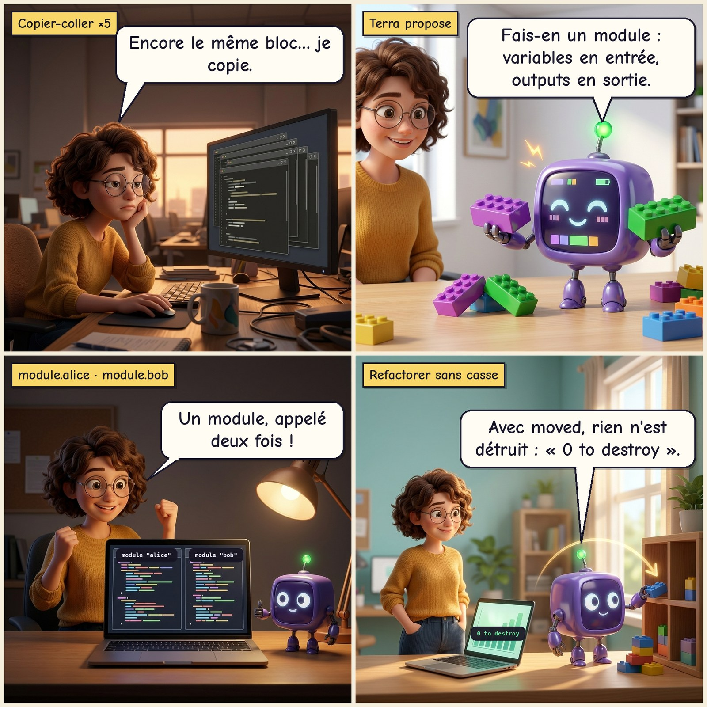
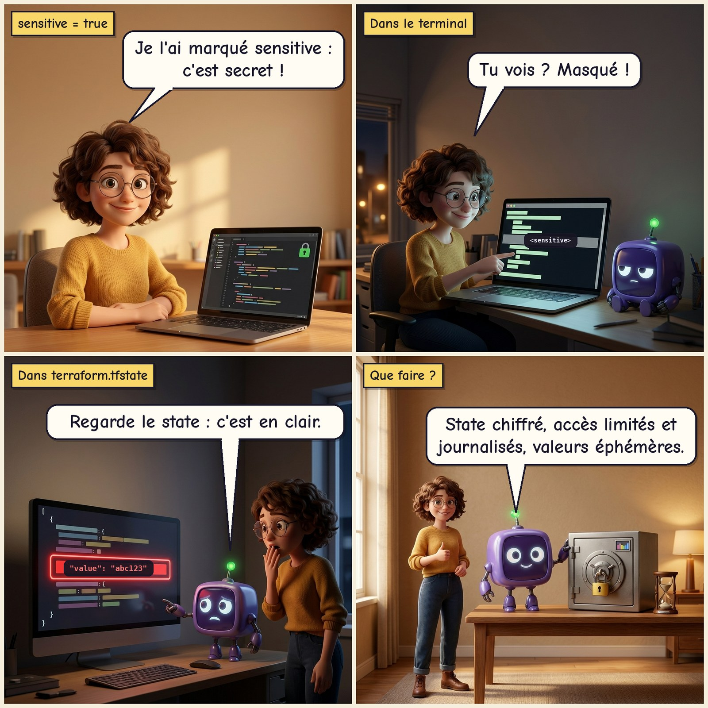
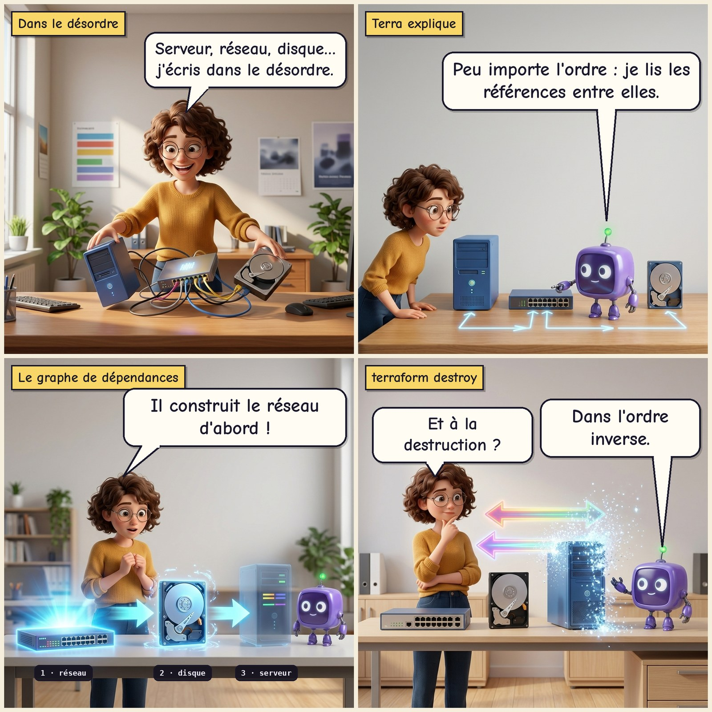

La BD de Léa et Terra
Léa débute avec Terraform. Terra, son cube violet, lui évite quelques catastrophes. Six planches, chacune tirée d'un comportement réel et vérifié dans les parties du parcours.
Planche 1 · Le plan avant l'action
Léa veut appliquer direct un vendredi soir ; Terra lui montre le plan avant l'action. Voir : Partie 1

Planche 2 · La mémoire de Terraform
Le fichier state : ce que Terraform croit exister, et ce qui arrive quand on le supprime. Voir : Partie 6
Planche 3 · count ou for_each ?
Avec count, retirer un élément décale tous les suivants ; for_each s'appuie sur des clés stables. Voir : Partie 5

Planche 4 · Les modules, c'est des légos
Un module réutilisable, appelé plusieurs fois, et ce que détruire un module emporte avec lui. Voir : Partie 7

Planche 5 · Sensitive n'est pas un coffre-fort
sensitive masque la valeur à l'écran, mais elle reste en clair dans le state. Voir : Parties 4 et 8

Planche 6 · Dans quel ordre ?
Terraform déduit l'ordre des références entre ressources, et détruit dans l'ordre inverse. Voir : Partie 3

Chaque planche renvoie à sa partie. Si une scène te parle, refais le TD correspondant : tu verras exactement la même chose dans ton terminal.